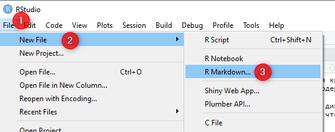
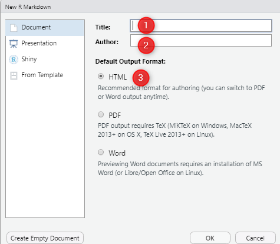
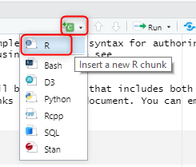
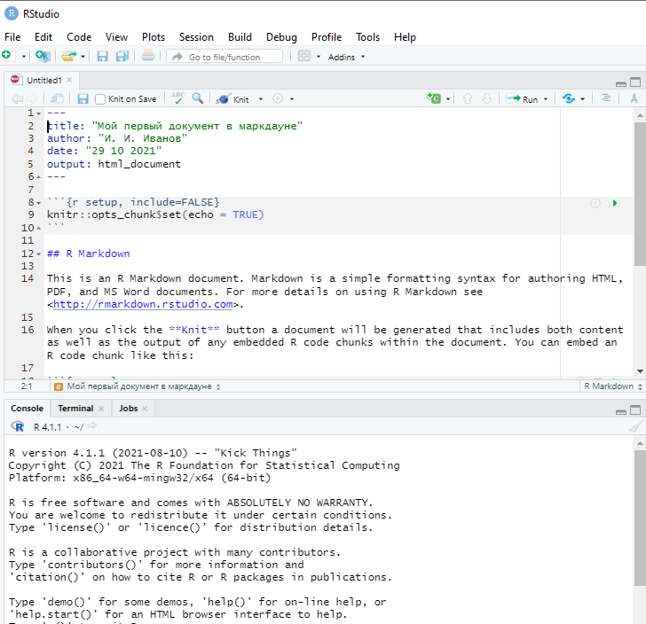
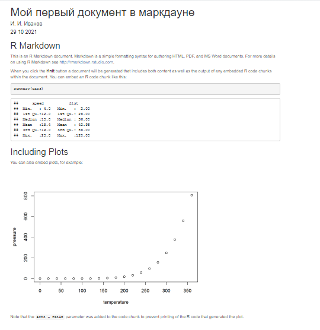
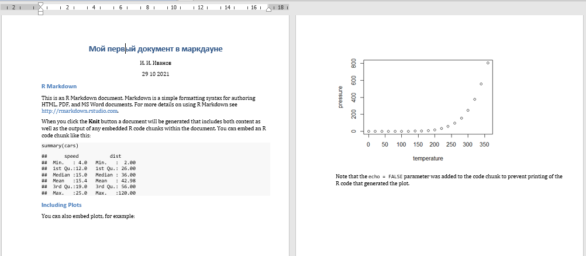

install.packages('rmarkdown')4 Основы работы с R Markdown
4.1 Что такое R Markdown и зачем он нужен
Markdown (Маркдаун) - это облегченный язык разметки с синтаксисом форматирования обычного текста, на основе которой могут быть созданы документы разного формата - HTML (веб страницы), PDF, документы в формате MS Word, интерактивные приложения. Больше информации о R Markdown можно посмотреть на официальной странице проекта http://rmarkdown.rstudio.com.
В R Markdown создается огромное количество документов - научных статей и книг, диссертаций, data science блогов и так далее. Лекция, которую вы сейчас читаете, тоже была создана в R Markdown, и ваш итоговый проект по курсу тоже будет реализован именно в нем.
Вот только несколько примеров того, что можно создать в маркдауне:


Ссылка на галерею работ: https://rmarkdown.rstudio.com/gallery.html
Markdown был создан дизайнером и блогером в области информационных технологий Джоном Грубером в 2004 году (https://twitter.com/gruber) и сегодня является одним из самых популярных языков разметки. Файлы, создаваемые с помощью маркдауна, имеют расширение .md или .markdown, а если они создаются в R - .Rmd.
4.1.1 В чем заключаются преимущества работы в R Markdown?
R Markdown - это программная среда, используемая для оформления результатов научных исследований и сочетающая возможности текстового редактора и редактора программного кода.
4.1.2 Как это происходит?
Вы создаете документ в R Markdown на основе определенной структуры, состоящей из разделов, параграфов, глав и т.д.
Части текста оформляются с помощью специального синтаксиса, а текст внутри них снабжается кодом, с помощью которого Вы обрабатыаете данные, создаете модели, визуализируете результаты исследования, ссылаетесь на научные и документационные источники, приводите цитаты, дополняете свой текст иллюстрациями, полученными из внешних ресурсов (например, фото из Интернета или репродукциями всемирно известных картин из музеев, а может быть и собственными фото- и дизайнерскими работами).
Когда все готово, Вы просто нажимаете кнопку knit (knit по-английски “вязать”), и маркдаун “связывает” отдельные элементы, преврашая их в целостный документ, отформатированный определенным образом:
- соблюдены размеры страницы
- текст оформлен с помощью нужных шрифтов
- имеет отступы, цвет, заголовки, подписи к рисункам и таблицам и т.д.
Основными достоинствами и стимулами к использованию R Markdown являются следующие:
- это легкий доступный язык форматирования для не-программистов, позволяющий создавать Интернет-страницы и другие документы;
- маркдаун позволяет конвертировать код сразу во множество форматов – PDF, HTML, docs и т.д.;
- маркдаун позволяет писать код не только на R, но и других языках – Python, Bash, D3, SQL, Stan, Rcpp;
- это возможность создания полностью воспроизводимых документов, сочетающих код (расчеты, методы анализа) и текст. Для научных исследований это чрезвычайно важно, ведь как правило в научных текстах содержатся уже готовые результаты, а как они были получены – не известно. Имея доступ к исходным данным и файлу в R Markdown, другие исследователи могут повторить эксперимент или создать свои собсвенные;
- благодаря R Markdown у исследователей появляется возможность не отвлекаться и сразу делать все “в одном месте”;
- маркдаун позволяет использовать средства форматирования для автоматического создания красивых таблиц и графиков в соответствии с публикационными требованиями (думать о содержании, а не о форме);
- немаловажно и то, что в маркдауне можно быстро и легко создавать динамические и интерактивные документы и приложения (дашборды, shiny-приложения), что может быть очень востребовано при работе с бизнес-партнерами.
4.2 Установка R Markdown
Будем исходить из того, что на ваших компьютерах уже установлены последние версии языка R и интерфейса для работы с ним - RStudio IDE. Если это еще не сделано, рекомендуем обратиться на официальные сайты (https://www.r-project.org) (R Core Team 2021) и RStudio IDE (https://www.rstudio.com).
После того, как R и RStudio установлены, нужно открыть программу RStudio и установить библиотеку rmarkdown:
Для того, чтобы корректно создавать и работать с документами в формате PDF, рекомендуется также установить LaTeX - набор расширений для компьютерной верстки и разметки текста, облегчающий набор сложных документов. Авторы R Markdown предлагают установить для этого библиотеку TinyTeX (https://yihui.name/tinytex/):
install.packages("tinytex")С этими двумя библиотеками в R Markdown можно скомпилировать практически любые документы, но иногда, в зависимости от конкретных задач, потребуется обращение и к другим программным пакетам.
Это и следующие практические задания мы будем выполнять в RMarkdown.
4.3 Создание нового документа в R Markdown
Чтобы создать новый документ в R Markdown необходимо открыть программу RStudio, выбрать пукты меню File - New File - R Markdown:

Далее, в открывшимся окне нужно написать название документа, фамилию и инициалы автора и выбрать нужный формат - HTML, PDF или Word. Если с помощью R Markdown планируется создание презентаций, интерактивных веб-приложений Shiny и документов на основе шаблонов (документов в формате PDF, адаптированных под определенные требования, например ведущих реферируемых журналов), то нужно в списке слева выбрать не документ, а соответствующий пункт. Нажать OK.

После нажатия кнопки OK, программа откроет образец файла .Rmd на английском языке с примерами оформления текста и примерами кода для обработки и визуализации на основе включенных в базовый R наборов данных. Код и текст легко различить: у текста белый фон, тогда как у кода - серый, и такие серые вставки, где пишется код, называют чанками, от английского слова chunk - “кусок”.
Все просто: мы пишем текст, а в нужных местах вставляем куски кода - чанки, chunks. Код обрабатывается автоматически, и результаты отображаются в документе. Таким образом, нет необходимости сохранять наши результаты в виде отдельных таблиц или рисунков, все происходит в одном месте - мы обрабатываем результаты исследования и описываем их в одном месте, в одной программе. И это, согласитесь, очень здорово. Безусловно, работа с маркдауном потребует некоторых усилий, поскольку потребуется изменить свой “исследовательский образ жизни”. Так, если вы привыкли работать с SPSS, а потом описывать в Word, то необходимо будет слегка перестроить рабочие процессы, как бы заново научиться анализировать в другом формате. Но зато потом вы будете вознаграждены, во-первых, уникальными результатам анализа и прекрасными визуализациями, научитесь оптимизировать свой код и проводить анализ, а, главное, получать нужные рассчеты гораздо быстрее и сразу в приемлемом для публикации виде, сможете сэкономить свое время.
Начало и конец чанка обозначается тремя машинописными обратными апострофами {```}, а между ними располагаются обычные строки кода, которые мы уже видели, когда работали в файле скрипта R на прошлых занятиях.
Чтобы создать новый чанк, нужно нажать на клавиатуре: Ctrl + Alt + I или выбрать в меню специальную кнопку (см. рисунок ниже):

Документ, который был создан автоматически, будет выглядеть примерно так:

Когда Вы создадите свой первый документ в маркдауне самостоятельно, обратите внимание на код в начале чанка echo = FALSE - он означает, что код будет воспроизведен, но не будет отображаться после того, как документ будет собран, в противном случае читатель увидит и код, и результаты его работы.
После того, как пробный документ откроется, предлагаем пока ничего в нем не менять, а сразу нажать на кнопку knit . Программа предложит сохранить документ, необходимо это сделать. После сохранения автоматически начнется процесс “сшивки”, и после его окончания, поскольку мы выбрали формат HTML, откроется новое окно браузера, в котором будет отображаться примерно следующее:

Если при нажатии кнопки knit выбрать Knit to Word, то будет создан новый документ в программе Word, который будет содержать аналогичный текст и графики, что и html-документ. Вот как это может выглядеть: 
Итак, в рамках данного занятия мы узнали:
- Что такое R Markdown и что можно делать с его помощью
- Разобрались с установкой необходимых библиотек, которые нам пригодятся для создания документов с помощью маркдауна
- Создали тестовый документ и научились применять функцию
knitдля того, чтобы отобразить разметку в форматах HTML и docx.
4.4 Задание для самостоятельной работы
- Создать новый документ RMarkdown.
- Изменить текст и код, используя материалы предыдущих уроков.
- Сделать небольшие описания.
- Сшить получившийся документ в формате html. Внимание: в начале каждого чанка должно быть указано
{r echo=TRUE}, чтобы я могла видеть ваш код. - Приложить файл html в качестве ответа на задание.
Полезные ссылки:
- https://r4ds.had.co.nz/r-markdown.html
- https://docs.microsoft.com/ru-ru/contribute/markdown-reference
- https://www.markdownguide.org/
- https://rmarkdown.rstudio.com/authoring_quick_tour.html
- https://www.rstudio.com/wp-content/uploads/2015/03/rmarkdown-reference.pdf